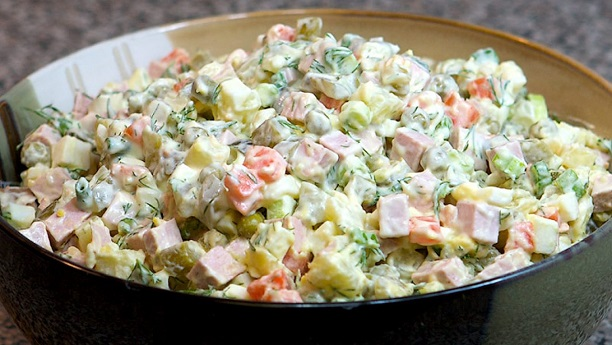

Russian Salad is known by several names such as “Ensalada Rusa” or “Olivier Salad” or “Salad Olivieh”. This is a simple salad invented in the 18th century by Lucien Olivier and widely recreated throughout Eastern Europe. Over the course of the centuries, different regions of Eastern Europe have developed their own variations of this salad but few core ingredients are common to them all: potatoes, eggs, carrots, pickles, onions, peas, and a mayonnaise-based dressing.
Back to Home